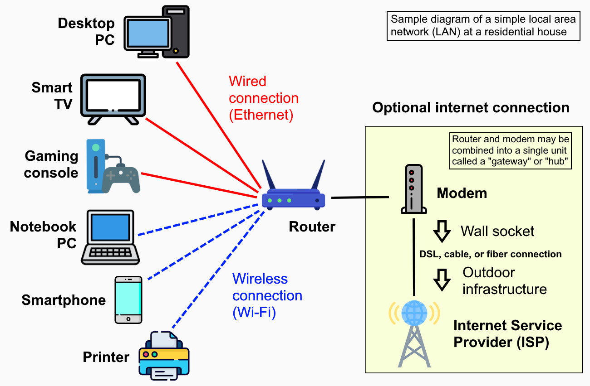
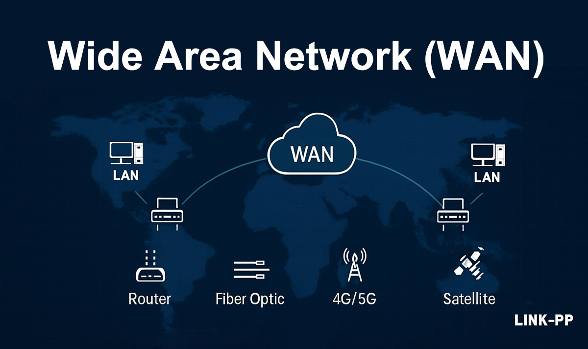
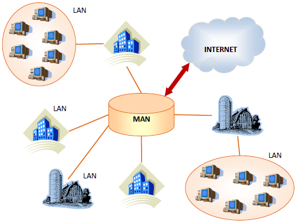
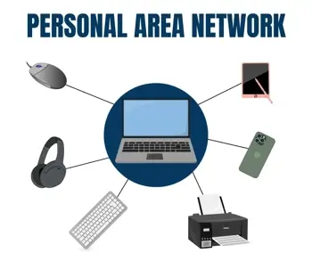
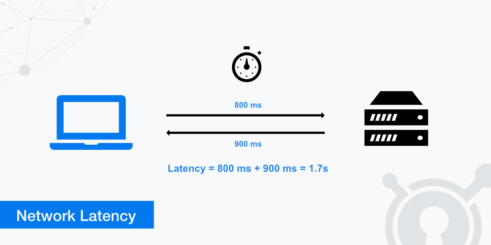
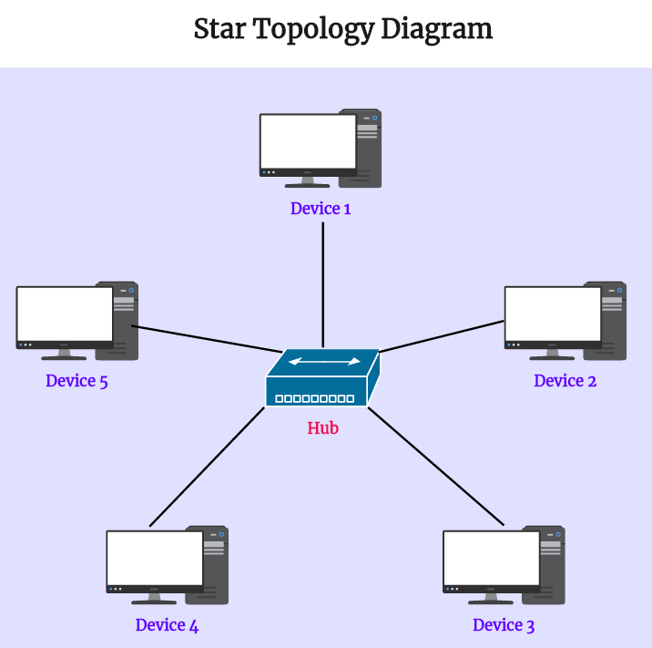
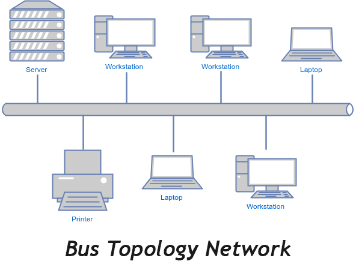
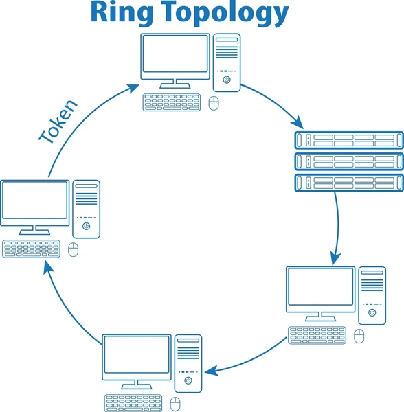

Network Types
🏠 1️⃣ LAN – Local Area Network
A LAN (Local Area Network) connects devices within a small area like: home, office, or school lab.
Local Area Network (LAN)

- Computers in your home connected to Wi-Fi
- Office PCs connected to a switch
- Very fast (high throughput)
- Low latency
- Easy to manage
- Low cost
- Limited area
- Needs maintenance
- Security depends on admin
🌍 2️⃣ WAN – Wide Area Network
A WAN (Wide Area Network) connects networks across large distances such as cities, countries, or continents.
Wide Area Network (WAN)

- Bank branches connected across India
- Office in India connected to a US server
- Global connectivity
- Resource sharing over distance
- Expensive
- Higher latency
- Slower than LAN
- ISP dependent
🏙️ 3️⃣ MAN – Metropolitan Area Network
A MAN (Metropolitan Area Network) covers a city-sized area.
Metropolitan Area Network (MAN)

- City-wide cable TV network
- University campuses across a city
- High-speed city connectivity
- Cost-effective compared to WAN
- More complex than LAN
- Security challenges
🏫 4️⃣ CAN – Campus Area Network
A CAN (Campus Area Network) connects multiple LANs within a campus.
- College with multiple buildings
- IT company campus
- High speed
- Centralized control
- Better security than WAN
- Costly infrastructure
- Limited to campus
📱 5️⃣ PAN – Personal Area Network
A PAN (Personal Area Network) connects devices around one person.
Personal Area Network (PAN)

- Bluetooth headphones
- Phone connected to smartwatch
- Laptop hotspot
- Very low cost
- Easy to set up
- Portable
- Very short range
- Low speed
📡 6️⃣ WLAN – Wireless LAN
A WLAN is a wireless version of LAN using Wi-Fi instead of cables.
WLAN (Wireless LAN)

- Home Wi-Fi
- Café Wi-Fi
- Office Wi-Fi
- No cables
- Easy mobility
- Flexible
- Lower throughput than wired LAN
- Interference
- Security risks
🧩 Quick Comparison Table (Exam Friendly)
| Network Type | Area Covered | Example |
|---|---|---|
| PAN | Few meters | Bluetooth |
| LAN | Building | Home / Office |
| WLAN | Building | Wi-Fi |
| CAN | Campus | College |
| MAN | City | Cable network |
| WAN | Country / World | Internet |
Please Let College Make World
PAN → LAN → CAN → MAN → WAN
Network Topologies
Topology = How devices are connected and how data flows
- Physical topology → Actual cable & device layout
- Logical topology → How data moves (often different)
⭐ 1️⃣ Star Topology (MOST COMMON)
In a Star Topology, all devices connect to one central device such as a switch or hub.
PC ─┼── Switch ── Internet
PC ─┘
Star Topology

- Home networks
- Offices
- Labs
- Easy to install & manage
- One cable failure affects only one device
- Easy troubleshooting
- High performance with switch
- Central device failure = whole network down
- More cables required
🚌 2️⃣ Bus Topology
In a Bus Topology, all devices share one main cable called the backbone.
Bus Topology

- Old networks
- Small temporary setups
- Low cost
- Simple design
- Backbone cable failure = whole network down
- Hard to troubleshoot
- Collisions happen
- Poor scalability
🔁 3️⃣ Ring Topology
In a Ring Topology, each device connects to two others, forming a circular ring.
Ring Topology

- Old telecom systems
- Token Ring (IBM – historical)
- No collisions
- Equal access for all devices
- One device failure breaks the ring
- Difficult to add/remove devices
- Slower than star topology
🕸️ 4️⃣ Mesh Topology
In a Mesh Topology, devices connect to many or all other devices.
- Full Mesh → Every device connects to every device
- Partial Mesh → Some devices are fully connected
Mesh Topology

- Data centers
- WAN links
- Wireless mesh networks
- Very reliable
- No single point of failure
- Best fault tolerance
- Very expensive
- Complex cabling
- Hard to manage
🔀 5️⃣ Hybrid Topology
A Hybrid Topology is a combination of two or more topologies.
- Star + Bus
- Star + Mesh
- Large organizations
- Enterprises
- Campuses
- Flexible
- Scalable
- Reliable
- Complex design
- Higher cost
🧩 Comparison Table (Exam Ready)
| Topology | Cost | Reliability | Used Today |
|---|---|---|---|
| Star | Medium | High | ✅ Yes |
| Bus | Low | Low | ❌ Rare |
| Ring | Medium | Medium | ❌ Rare |
| Mesh | Very High | Very High | ✅ Yes |
| Hybrid | High | High | ✅ Yes |
Physical vs Logical Topology
Physical topology = How devices are physically connected
Logical topology = How data actually flows
In networking, topology can be viewed in two different ways. Many students get confused, but once you understand this section, troubleshooting becomes very easy.
🔌 Physical Topology
Physical topology refers to the actual layout of cables, devices, and hardware.
“What you can see and touch”
- Cables (Ethernet, fiber)
- Switches
- Routers
- Physical device placement
• PCs connected to a switch using Ethernet cables
• Wi-Fi router placed in the center of the office
👉 This is physical topology
- Star
- Bus
- Ring
- Mesh
🔄 Logical Topology
Logical topology describes how data moves inside the network, regardless of physical connections.
“How communication actually happens”
- Protocols
- Network rules
- Data flow logic
Even if computers are physically connected in a star, data may flow in a logical bus or logical ring depending on technology.
- Ethernet → Logical Bus
- Token Ring → Logical Ring
- Wi-Fi → Logical shared medium
🧩 Physical vs Logical Topology (Side-by-Side)
| Feature | Physical Topology | Logical Topology |
|---|---|---|
| Definition | Actual cable & device layout | How data flows |
| Focus | Hardware | Communication |
| Visible? | ✅ Yes | ❌ No |
| Depends on | Cables & devices | Protocols & logic |
| Changes easily? | ❌ Hard | ✅ Easier |
🛠️ CCST Troubleshooting Logic (VERY IMPORTANT)
Technician steps:
1️⃣ Check physical topology
• Cable unplugged?
• Switch powered ON?
2️⃣ Check logical topology
• IP configured?
• VLAN / routing issue?
👉 Physical first, logical next
Physical = Hardware & cables
Logical = Data flow & rules
✔ Physical topology is visible
✔ Logical topology is invisible
✔ One physical topology can have different logical topology
✔ Always troubleshoot physical before logical